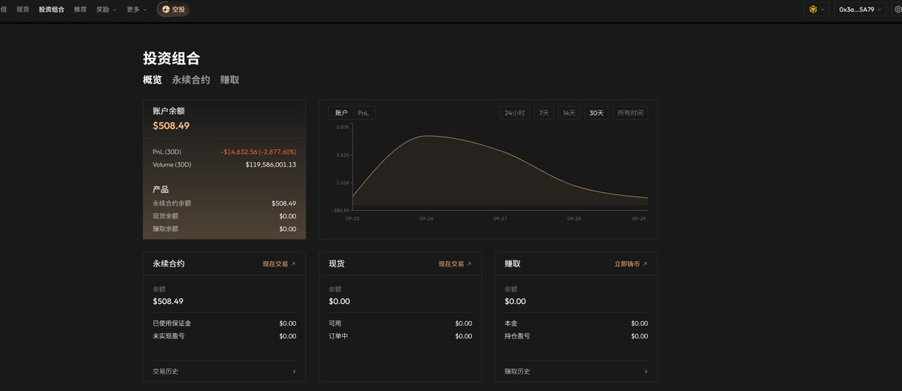
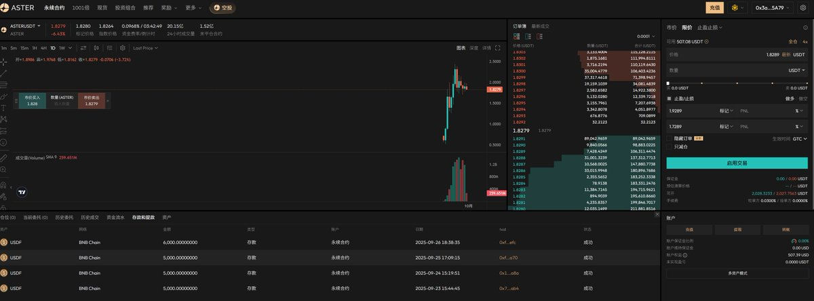
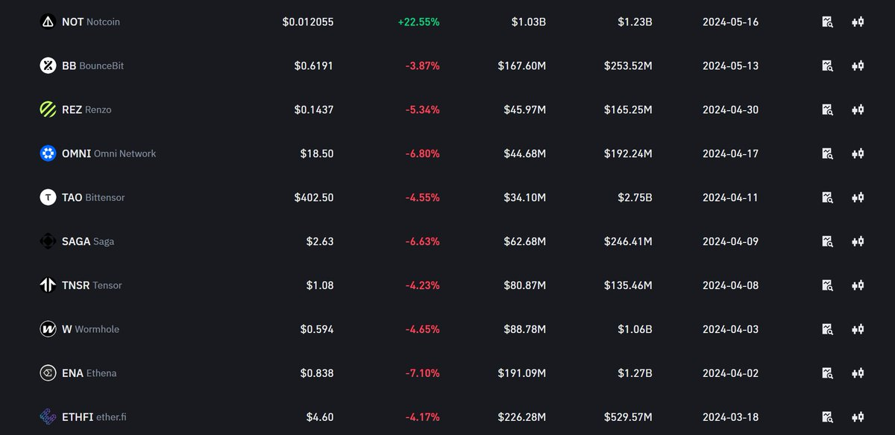
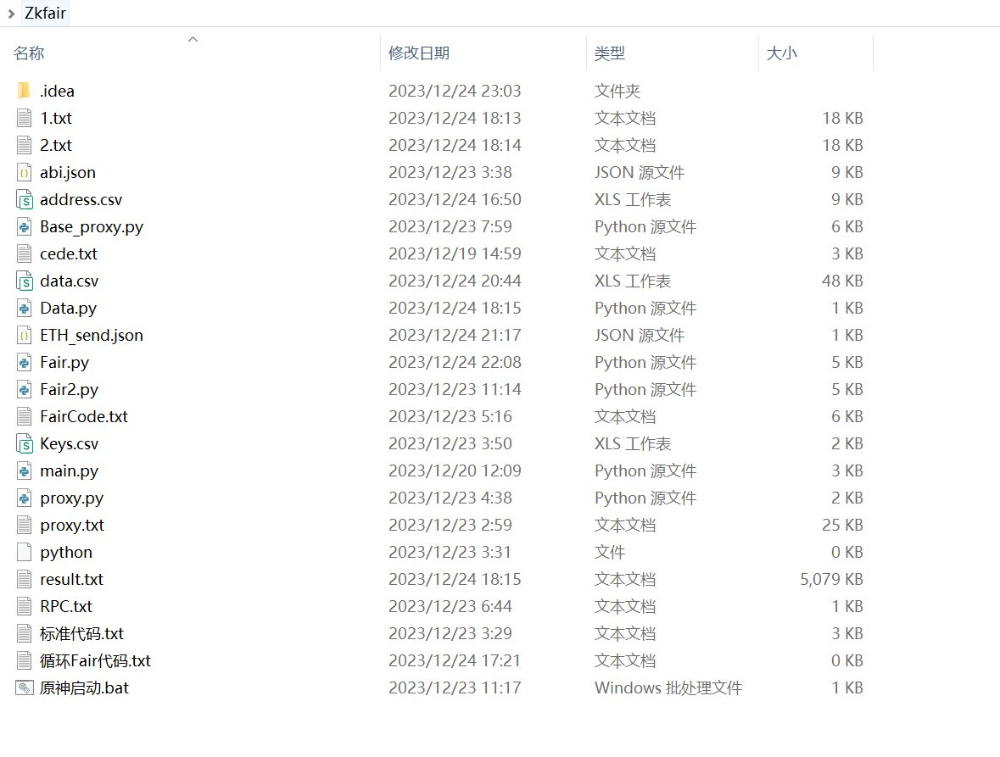
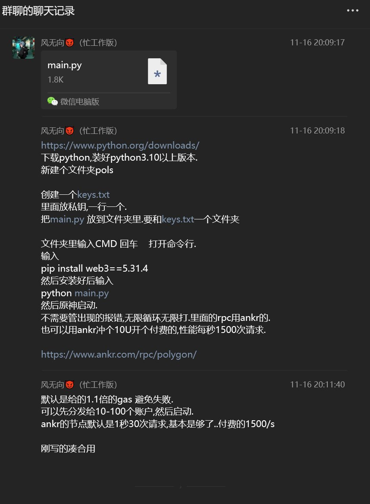
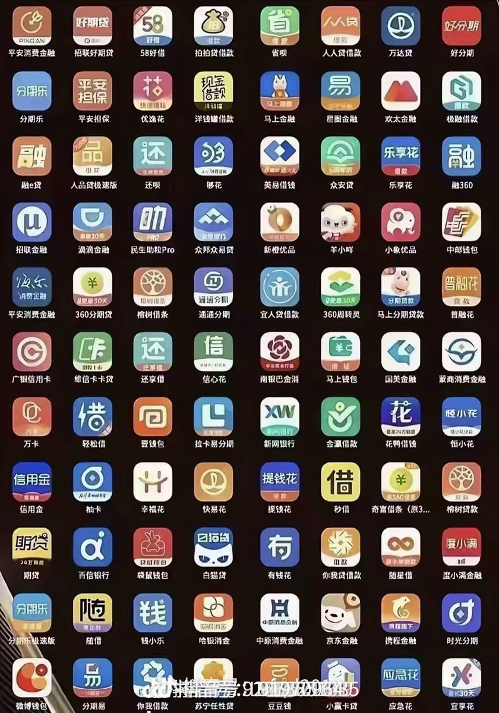
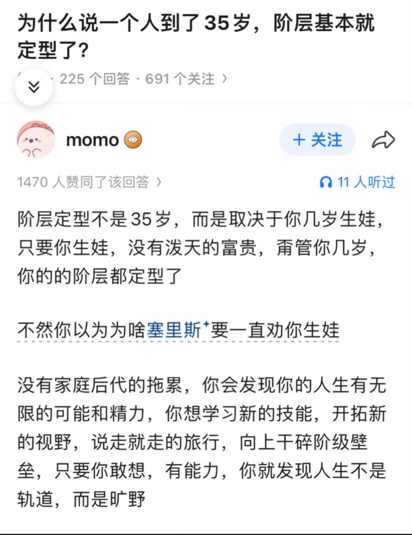

01 · 破局路径
看这一章 →
小散户突围双通道：交易天赋 vs 产业化工作室
下沉小散户想改变命运，先诚实认清自己：要么真有交易天赋，要么把还没产业化的事用 Web2 思维做成产业化。
没有天赋就别在盘口硬拼赌运气，把打新、撸毛等草莽红利做成标准化流水线，是普通人胜率最高的起家方式。
- 诚实评估自己适合盘面博弈还是流程化执行
- 用传统互联网做生意的成本与 ROI 思维管工作室
- 在细分红利尚未完全卷死前迅速跑通标准化复制
华语撸毛工作室与长尾套利代表人物，外号“通天贷”，从打新撸毛产业化做起，持续拆解长尾量化空间、反追涨风控纪律、AI 自动化提效与小散户破局路径。完整收录 4,020 篇 X 本人原创推文（按 7 大板块、17 个自然小节排好，原汁原味）与 156 张本地配图；底部同步收录 4 篇深度长文（共 8,107 字）。
下沉小散户想改变命运，先诚实认清自己：要么真有交易天赋，要么把还没产业化的事用 Web2 思维做成产业化。
没有天赋就别在盘口硬拼赌运气，把打新、撸毛等草莽红利做成标准化流水线，是普通人胜率最高的起家方式。
Jane Street 和 Jump 看不上一年几十万刀的容量，但对个人来说，一年 500K 已经是极其肥美的长尾市场。
大资金有巨大的资金容量门槛，反而给灵活的个人交易者和小型团队留出了无需正面硬刚巨头的套利空间。
99 块抽 1/800 概率、市价 2000 块的盲盒隐藏款，赔率才 20 倍——EV 负到姥姥家，不懂概率的人最容易买单。
无论是消费盲盒还是链上土狗，下注前先算清真实中奖率与盈亏比，绝不靠情绪给庄家送钱。
人生改变阶级命运的机会就那么一两次，装修这类日常琐事耗光你的精力，往往让你错失真正的大行情。
人的顶级注意力极其稀缺，能花钱外包的琐事坚决外包，把全部认知带宽留给少数高赔率主战场。
越是全网 FOMO 喊着要起飞的时候，越要保持冷静，别在情绪最高点替先手买单。
保住本金和盈利回撤后的心理脱敏，比抓到某一次百倍币更决定你在市场里能活多久。
面对感情和财务决策别找只会顺着你夸的模型，实测能明确说不、边界清晰的工具才真能帮你避坑。
善用不同大模型的强项做信息检索、代码编写和方案校验，用一人公司配置跑出团队级产出。
普通小资金怎么在币圈突围？风无向直白指出两条路：要么具备极少数人的盘感天赋，要么像做传统生意一样，把未产业化的机会规模化、流程化。
币圈的大钱靠大行情，稳钱靠交易好习惯。梳理风无向在空投交互、打新套利、控制 Gas 与交易手续费磨损上的真实细节。



从个人单打独斗到开工作室当老板，真正的门槛往往不在链上，而在管人、定标准和砍掉吞噬精力的低效内耗。
个人根本不需要和顶级量化机构在主流流动性池里硬碰硬：大资金看不上的中小容量长尾缝隙，恰恰是个人和小型团队最肥美的蓝海。
从 99 元抽隐藏款的泡泡玛特盲盒到链上土狗，万物皆可算 EV。先把概率与赔率算明白，就能避开市面上九成以上的智商税与负期望陷阱。
记录风无向在资金费率、打新锁价、稳定币生息和各类规则缝隙里的低回撤实战思路。
每当群里全员沸腾、情绪上头准备追高时，先问自己一句：是谁在给你派发筹码？把不追涨刻进肌肉记忆。
梳理风无向在主流币牛熊切换期的仓位节奏、大额回撤后的心态脱敏与现货合约边界。
记录风无向对链上 Meme、NFT 与新发币项目的实时参与复盘与情绪节奏观察。
跳出纯币圈视野，看懂美股核心资产、跨境电商与传统实体生意的商业护城河与估值逻辑。
关注利率周期、汇率变化与出海生活成本，为加密盈利寻找更稳健的跨周期落脚点。
从真实付费使用体验出发，实测对比 Claude、GPT 等模型在投研、风控与写作中的靠谱程度。
当写代码不再是少数程序员的专利，懂业务逻辑的个人交易员和工作室如何用 AI 编程把执行效率拉满。


“通天贷”不是盲目乱借钱赌博，而是看清人生改变阶级的窗口往往只有一两次——算清赔率、全力以赴、不让琐事耗光黄金年份。

为什么装修一套房的琐事能让人错失大机会？拆解精力管理、抓大放小，以及面对延迟满足的心理定力。

收录风无向在推上广受转发的犀利社会观察：从原生家庭、婚恋博弈到消费比价与人情世故，独立归档不混入交易章节。
集中收纳风无向的日常随笔、行业短评、热点吐槽与推友互动，保持前面核心方法论章节纯粹清爽。